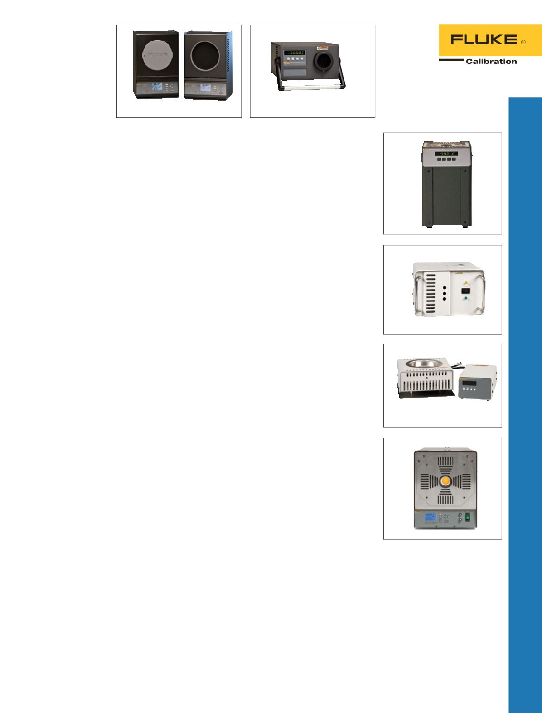

9150
9101
3125
9132 und 9133
4180/81
Infrarot-
Kalibratoren
Präzisions-Infrarot-Kalibratoren
der Serie 4180/81
Zertifizierte Leistung für einfach
durchzuführende, zielgenaue
Kalibrierungen.
•
Aussagekräftige, konsistente
Ergebnisse durch radiometrische
Kalibrierung
•
Kalibrierzertifikat enthalten
•
Genaue und zuverlässige
Ergebnisse im Temperaturbereich
von –15 °C bis 500 °C
Portable Infrarotkalibratoren
9132 und 9133
Präzise Temperaturreferenz für die
Infrarot-Temperaturkalibrierung.
•
Geeignet zur Kalibrierung von
IR-Pyrometern von –30 °C bis
500 °C
•
Großes Schwarzkörper-Ziel
(57 mm)
•
RTD-Referenzbohrungen für
Kontakttemperaturmessung
Nullpunkt-
Blockkalibrator
Blockkalibratoren, Serie 9101
Eispunkt-Referenz ohne Eis.
•
± 0,005 °C Stabilität in einer
portablen Eispunkt-Referenz
•
Einfache Neukalibrierung für
Langzeit-Zuverlässigkeit
•
Leuchte zur Anzeige der
Startbereitschaft für Zeitersparnis
und höhere Aufmerksamkeit
des Nutzers
Oberflächen-
Messfühler-
kalibrator
Oberflächen-
Messfühlerkalibrator 3125
Gefrästes Aluminium für
einen glatten und echten
Kalibrierarbeitsbereich mit
maximaler thermischer
Leitfähigkeit.
•
Kalibriert Oberflä-
chenmessfühler bis zu 400 °C
•
Verwendet den Regler 2200
von Fluke Calibration für
hervorragende Genauigkeit
und Stabilität
•
Einschließlich per NIST
rückführbarer Kalibrierung
Thermoelement-
Öfen
Thermoelementofen 9150
Bequemer, portabler
Thermoelementofen.
•
150 bis 1200 °C
•
Stabilität von ± 0,5 °C über
den gesamten Bereich
•
Kalibrierschein mit
Rückführbarkeit auf NIST im
Lieferumfang
•
Standardmäßig mit
RS-232-Port
25
Temperaturkalibrierung